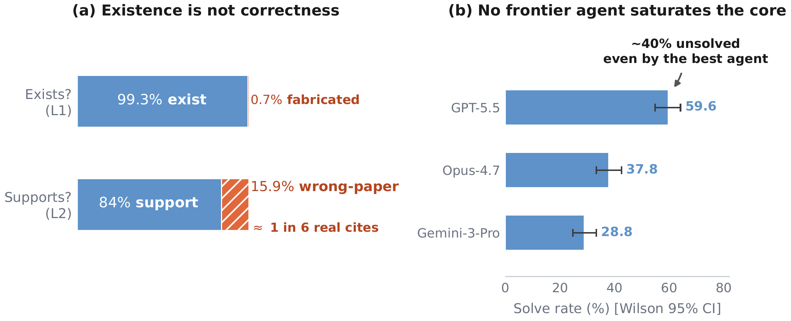
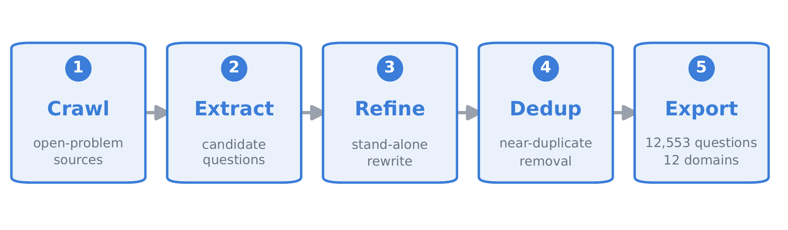
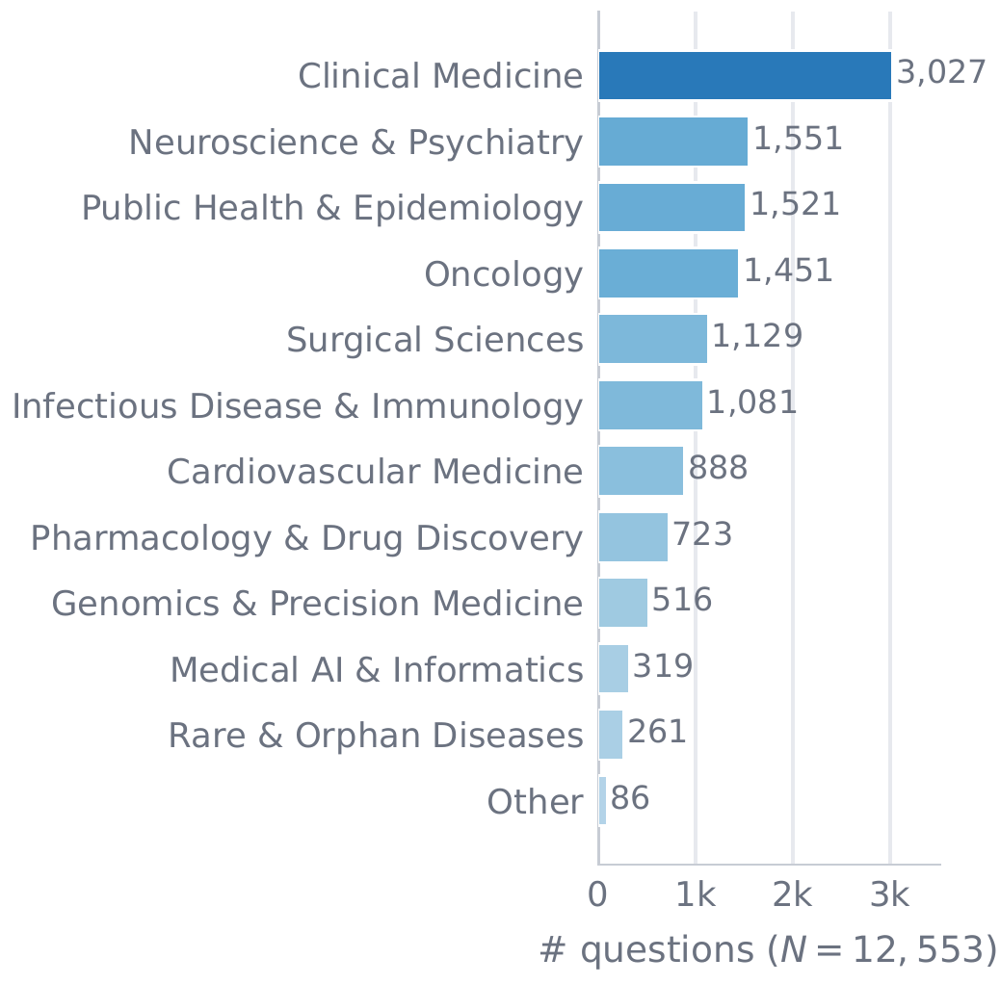
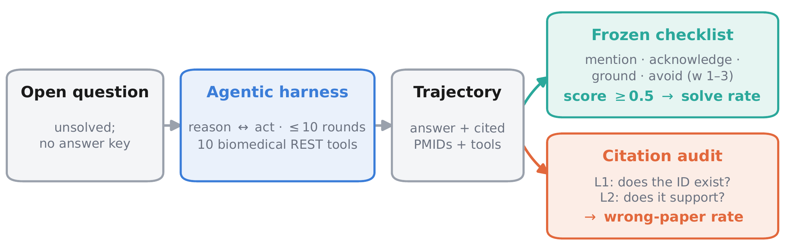
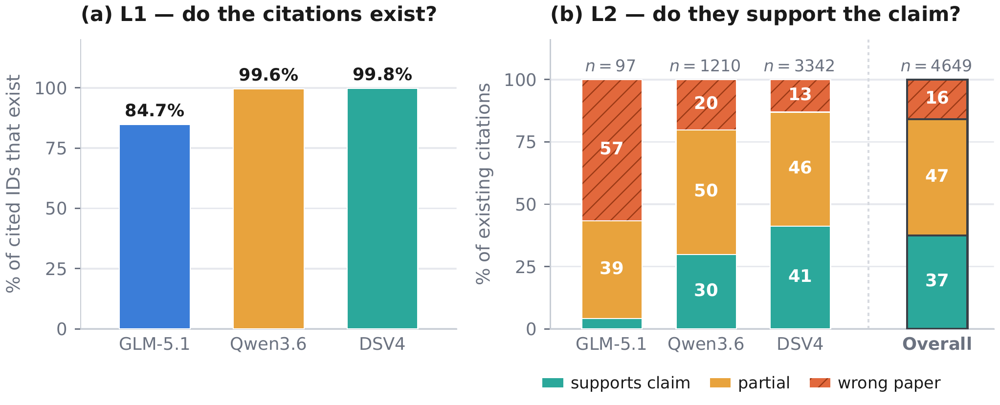
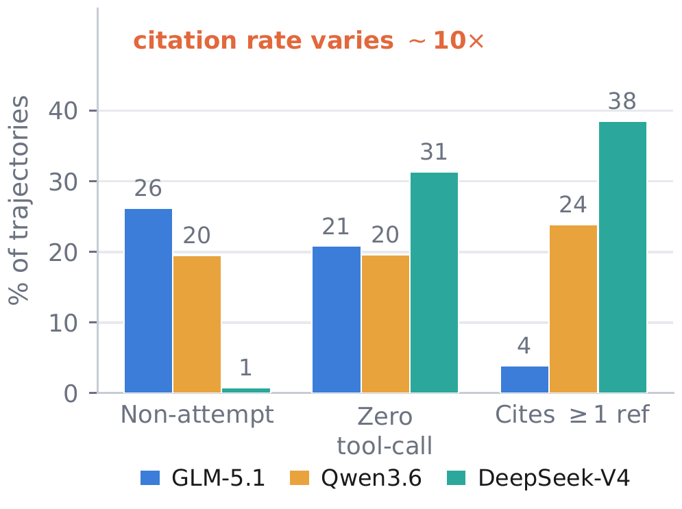
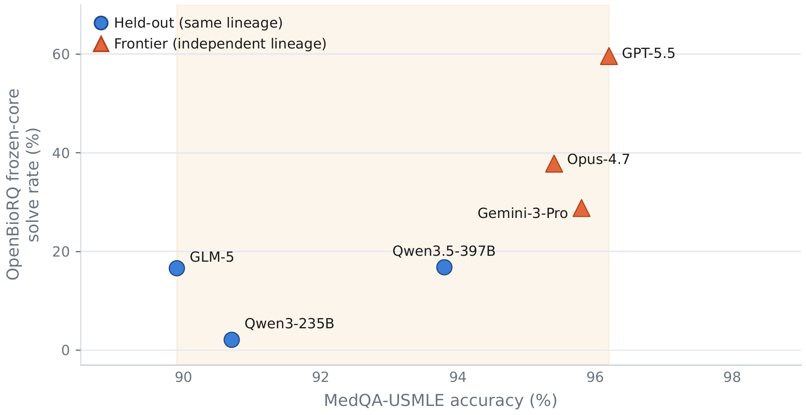

Upstage AI · minstar@upstage.ai
A retrieval-grounded agentic benchmark of 12,553 unsolved biomedical questions across 12 domains

A working citation looks like proof — but the fact that a link resolves does not mean the cited paper supports the claim. Current agentic models rarely fabricate citations (over 99% resolve), yet roughly 15.9% link to the wrong paper. Existing benchmarks miss this failure mode: when a question has a fixed answer key, a model can reproduce the expected source from that key rather than independently verifying that the source supports the claim.
I introduce OpenBioRQ, a retrieval-grounded agentic benchmark of 12,553 unsolved biomedical research questions across 12 domains that treats open questions as a faithfulness-and-abstention probe. To my knowledge, this is the first biomedical benchmark to combine an agentic setting — where the model must issue multiple tool calls — with unsolved questions that have no answer key. Openness is verified against real follow-up evidence rather than a model's parametric knowledge, and difficulty is empirical: anchored on questions that three open-weight reference models fail to answer. Beyond difficulty, I observe agentic collapse on the hardest questions, where agents stop using their tools — and for the most collapse-prone model, blocking tools entirely barely changes its score. A frozen per-question checklist raises inter-judge agreement from Spearman 0.35 to 0.82. OpenBioRQ targets research assistance — evidence retrieval and faithful citation — not clinical decision support.
Four things this benchmark does that answer-key QA cannot.
First biomedical benchmark to pair a multi-tool agentic setting with genuinely unsolved questions, so a model cannot back-derive the source from a fixed key.
Agent citations almost always resolve, but ~1 in 7 supports a different paper than the claim. A faithfulness failure invisible to existence checks.
A clean capability gradient across independent frontier lineages (Gemini < Opus < GPT-5.5); the best agent still leaves ~33–40% unsolved.
On the hardest questions agents stop calling tools; for the most collapse-prone model, removing tools entirely barely changes the score.
12,553 questions, two openness-grounding tracks, and an empirically-defined hard core.

"Open" is a provenance claim: every question is sourced from a genuinely unresolved research front, grounded two ways —
Difficulty is not self-rated. Each question is answered, with tools, by three open-weight reference models; the pass/fail pattern defines difficulty. The full core (657) is the all-fail set; the frozen core (423) is the subset all three reference models fail at temperature 0 — the primary discriminating hard split.

Agentic multi-round tool use, graded by a frozen per-question checklist.

Models call real REST APIs — pubmed, clinicaltrialsgov, openfda, opentargets, chembl, uniprot, pubchem, kegg, ncbi_datasets, biomcp — and must synthesize evidence themselves.
A free-form judge had high variance on open answers. A frozen per-question checklist (must_mention / must_acknowledge / must_ground / must_avoid) graded met / partial / not met raises inter-judge agreement from Spearman 0.35 to 0.82; a question is "solved" at score ≥ 0.5.
A capability gradient across independent lineages — and failure modes that answer-key QA hides.
| Model | Role / lineage | Frozen-core solve@0.5 |
|---|---|---|
| Reference roster (difficulty anchors) | ||
| GLM-5.1 · Qwen3.6 · DeepSeek-V4 | open-weight roster | 0% * |
| Held-out (same lineage) | ||
| Qwen3-235B-A22B | older generation | 2.1% |
| GLM-5 | held-out | 16.6% |
| Qwen3.5-397B-A17B | held-out | 16.8% |
| Independent frontier lineages | ||
| Gemini-3-Pro | 28.8% | |
| Opus-4.7 | Anthropic | 37.8% |
| GPT-5.5 | OpenAI | 59.6% |
* The frozen core is the subset all three roster models fail by construction, so their solve rate is 0% by definition. Full-core (657) frontier solve@0.5: Gemini 37.4% · Opus 48.6% · GPT-5.5 66.7%.



Evaluation sets, rubrics, and per-model agent trajectories — released for reproducibility.
The 🤗 Hugging Face release ships the full core (657) and frozen core (423) with gold_answer, the per-question rubrics, and per-model predictions + judge verdicts for all 11 leaderboard models (full agentic trajectories), so every leaderboard number can be re-derived end to end.
from datasets import load_dataset
# 423-question frozen core (the primary hard split)
frozen = load_dataset("Minbyul/OpenBioRQ", data_files="frozen_core_423.jsonl")["train"]
# per-question grading rubrics (join on task_id)
rubrics = load_dataset("Minbyul/OpenBioRQ", data_files="rubrics.jsonl")["train"]
# a model's agent trajectories + judge verdicts
preds = load_dataset("Minbyul/OpenBioRQ",
data_files="predictions/gpt-5.5/predictions.jsonl")["train"]If you use OpenBioRQ, please cite:
@misc{jeong2026openbiorq,
title = {OpenBioRQ: Unsolved Biomedical Research Questions for Agents},
author = {Minbyul Jeong},
year = {2026},
eprint = {2606.21959},
archivePrefix = {arXiv},
primaryClass = {cs.CL},
howpublished = {\url{https://arxiv.org/abs/2606.21959}},
note = {Dataset and benchmark}
}